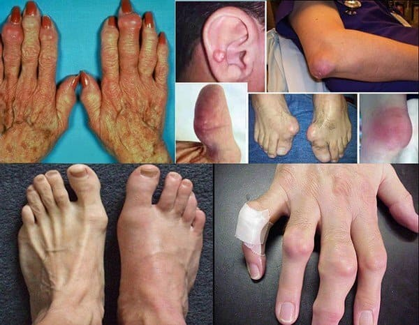
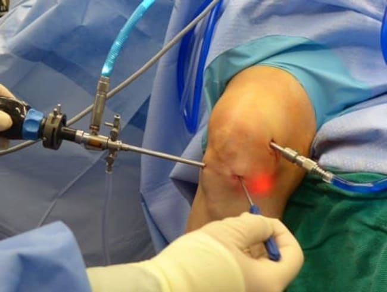
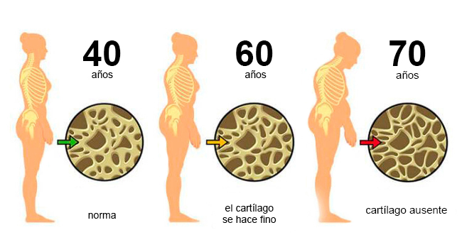
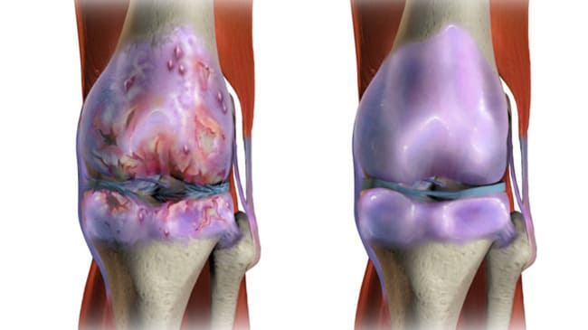
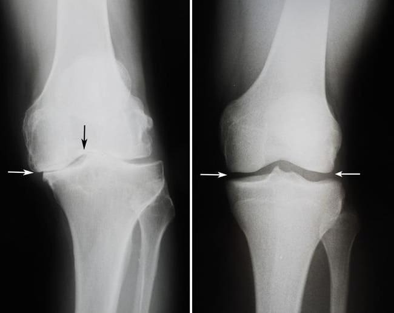
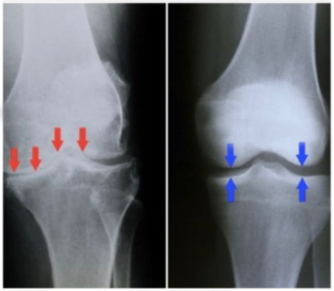
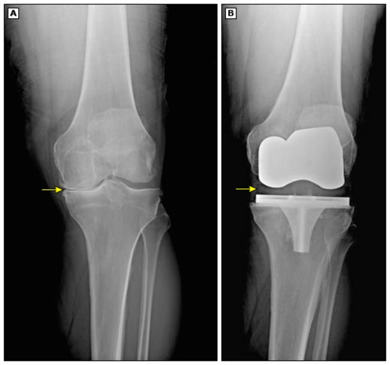
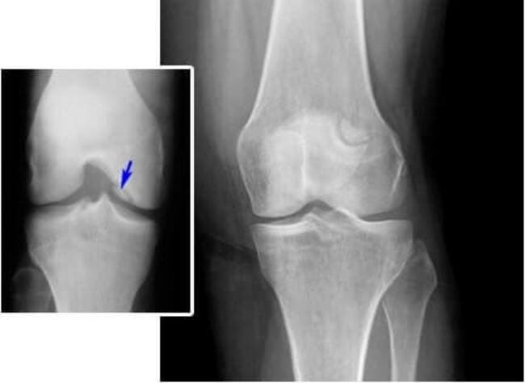

En Japón fue descubierta la crema para el alivio del dolor que puede aliviar la artritis, la osteoartritis, la osteoporosis y los problemas de dolor en las articulaciones en 30 días. Simplemente ayudando a recuperar las articulaciones y los huesos a través del proceso "TRTT".
El científico japonés Yoshinori Ohsumi afirma haber tratado por completo a una anciana de artritis avanzada hace más de 10 años.
En su entrevista de hoy, dirá cómo es posible, cómo se puede deshacerse del dolor y tratar todas los problemas de las articulaciones sin cirugía, sin procedimientos dolorosos y medicamentos costosos y peligrosos. Siga las instrucciones a continuación y conozca la nueva crema para aliviar el dolor.
Corresponsal: Buenos días Dr. Ohsumi. Muchos expertos argumentan que los problemas y el dolor en las articulaciones son compañeros inevitables después de los 40 años. ¿Está de acuerdo con esto?
- Yoshinori Ohsumi: "¡Buenos días! Por supuesto que no es así. Depende del médico, si prescribe el tratamiento adecuado, si quiere ayudar al paciente o simplemente engañarlo.
De hecho, las articulaciones se pueden restaurar a cualquier edad.
Es decir, si conoce el secreto y tiene un enfoque científico, los problemas se pueden resolver incluso en casa y muy rápidamente.
Miles de personas en Asia, Estados Unidos y Europa del Este ya se han recuperado. Espero que esta tecnología nos llegue pronto."
Corresponsal: ¿Cuál es el secreto del tratamiento?
- Yoshinori Ohsumi: "El secreto es entender por qué algo duele.
Las enciclopedias enumeran 147 causas de artritis y artrosis, pero la verdadera causa es siempre la misma: las articulaciones, las vértebras y los cartílagos pierden elasticidad, de ahí el dolor.
Se desgastan por mal manejo, exceso de peso y, por supuesto, por la edad.
¡El secreto principal es que las articulaciones deben restaurarse correctamente y esto funciona para todos!"
Corresponsal: Sí, pero después de 40 años es casi imposible restaurar las articulaciones y los huesos, ¿verdad?
- Yoshinori Ohsumi: "¡Eso es una gran MENTIRA! Más de 144.000 personas en Europa y USA están sanas porque siguen mi método, y todas ellas tienen más de 45".
Corresponsal: ¿Su método logró tratar a personas en fases tardías, por ejemplo, personas en sillas de ruedas que no podían caminar debido a los problemas articulares?
- Yoshinori Ohsumi: "Sí, tuvimos 3 de esos pacientes y los tratamos a todos.
Al principio no creían en mi método, pero después de que empezaron a caminar de nuevo, estuvieron muy contentos y me agradecieron, aunque yo solo hacía mi trabajo como médico.
La mayoría de las personas que acuden a mí son personas normales mayores de 40 años que se quejan de dolencias relacionadas con la edad.
Todos tienen un problema muy parecido: duelen las articulaciones y los huesos. Sufren, soportan el dolor, les cuesta hasta caminar. Todos se quejan: "¿Por qué yo? ¿Por qué me duele tanto?"
Y yo digo: "Llorar y quejarse no aliviará el dolor y la enfermedad, sigan exactamente lo que les digo y estarán bien!"
Corresponsal: ¿Qué métodos suelen recomendar los médicos?, ¿es cierto que por lo general ayudan rara vez?, ¿y por qué los médicos siguen recomendando tratamientos que no ayudan?
- Yoshinori Ohsumi: "Por lo general, los pacientes se ven obligados a realizar entrenamientos complejos de 96 ejercicios gimnásticos.
Este es un método extremadamente ineficiente y, al mismo tiempo, muy complejo y dificil. La gente está sufriendo, sus vidas son difíciles y no tienen suficiente tiempo para ir al gimnasio.
Este tipo de tratamiento ciertamente no ayuda. Pronto recurren a la cirugía, que casi siempre se hace apresuradamente y tampoco resuelve el problema.
Luego van a procedimientos costosos en clínicas privadas y toman medicamentos costosos que son muy dañinos para la salud.
Recientemente, compartí mi desarrollo con más de 2000 médicos en Europa y EE. UU., y ahora la mayoría de los médicos ya no recomiendan métodos ineficaces.
Pero por alguna razón en Ecuador no quieren entender la verdad, entonces estoy dando esta entrevista para que todos sepan que hay algo que realmente funciona y ayuda con el dolor y los problemas articulares.
Corresponsal: Hemos escuchado mucho sobre el masaje de compresión. ¿Es posible aliviar el dolor presionando una parte determinada del cuerpo?
- Yoshinori Ohsumi: "El dolor se puede reducir o eliminar, pero la articulación no se recupera. La gente a menudo me hace estas preguntas. Recuerde: la acupresión debe ser realizada por un profesional y, como sabes, no hay muchos buenos médicos.
Los verdaderos especialistas se pueden contar con los dedos y casi todos viven en Japón o China. Pero es imposible subirse a un avión e ir allí cuando la enfermedad empeora.
Sin embargo, no tiene que preocuparse: hay una salida. Siempre pensé que debería haber un método más simple e innovador, y lo encontré."
Corresponsal: ¡Qué interesante! ¿Usted podría contar más sobre este método?, ¿cuál es su idea principal?, ¿realmente su invento permite a las personas vivir sin dolor ni enfermedades articulares?
- Yoshinori Ohsumi: "¡La cirugía, los ejercicios complejos, los medicamentos peligrosos y los tratamientos costosos para los problemas articulares son una tortura y una pérdida de dinero! Estas palabras mías ya han sido confirmadas por millones de personas en todo el mundo.
Después de métodos no funcionales y arriesgados, más de 144.000 personas en Europa y EE. UU. están satisfechas de que ya han recibido tratamiento terapéutico con y disfrutan de una vida sin dolor.
Nuestra clínica fue la primera en usar la crema para el dolor articular. Debo reconocer que no todos creían en el éxito, pero yo sabía que todo saldría bien y no me equivoqué.
Realizamos una encuesta entre quienes usaron la crema .
La encuesta mostró que 4567 personas pudieron deshacerse de todo tipo de problemas con las articulaciones en 30 días. Esto es el 94% de los participantes.
El 5,6% de los participantes sintió una mejora significativa y solo el 0,4% no tuvo una dinámica positiva dentro de los 30 días, pero los cambios positivos comenzaron a aparecer en el día 40.
Todos los participantes declalaron por unanimidad que este método es 10 veces mejor que la terapia convencional recomendada por los expertos, y mucho mejor que la cirugía o los analgésicos de por vida".
Corresponsal: ¿Entonces la crema anestésica se llama ?
- Yoshinori Ohsumi: "Sí, así es. La llamamos después de que detuvo el sufrimiento de nuestros pacientes".
Corresponsal: ¿Cómo afecta al cuerpo humano?
- Yoshinori Ohsumi: "Aquí no hay milagro, es pura ciencia. funciona tan bien porque tan pronto como se aplica, actúa inmediatamente sobre las articulaciones y su inflamación, lo que ayuda a aliviar el dolor en 1 hora y ayuda a eliminar los ataques severos.
Luego, con la ayuda de , el cartílago antiguo dañado se destruye y se crea cartílago nuevo no dañado, iniciando el proceso TRTT.
TRTT es un proceso que elimina el cartílago muerto ya afectado por la enfermedad articular, evitando que se propague.
Después de su eliminación, comienza un proceso de reparación, en el que se construye cartílago nuevo en lugar del cartílago viejo dañado.
 Yoshinori Ohsumi: Una vez que el cuerpo detecte el efecto de TRTT, comienza a ayudar y a suministrar aún más calcio y cartílago a los huesos y las articulaciones.
Yoshinori Ohsumi: Una vez que el cuerpo detecte el efecto de TRTT, comienza a ayudar y a suministrar aún más calcio y cartílago a los huesos y las articulaciones.
Ya después del primer uso, ayuda a reducir el dolor, la inflamación y el daño óseo causado por la edad u otras causas.
El proceso TRTT también engaña al cerebro haciéndole creer que los huesos necesiten más vitaminas, minerales y cartílago, lo que consolida los huesos y hace las articulaciones más móviles y sólidos.
es la única crema que puede ayudar a iniciar el proceso TRTT que es diferente de todos otros tratamientos."
Corresponsal: ¿Quién puede usar este método?
Yoshinori Ohsumi: "Hoy en día, el 80% de los reumatólogos en los EE. UU. y Europa recomiendan como método para aliviar el dolor y para una fácil y rápida recuperación de articulaciones y huesos.
Esto es exactamente lo que recomiendan a sus pacientes, porque el método TRTT no tiene efectos secundarios, su eficacia ha sido científicamente comprobada por más de 144.000 mil pacientes, y lo más importante: es asequible para todos.
Así que, literalmente, cualquiera puede usar ."
Corresponsal: Según las instrucciones, ¿es suficiente aplicar la crema dos veces al día?
- Yoshinori Ohsumi: "¡Sí! Sentirá un alivio inmediato del dolor justo después de comenzar el proceso TRTT que expliqué anteriormente y en TRES DÍAS el dolor habrá desaparecido por completo y las articulaciones y los huesos ya comenzarán a recuperarse.
Todos los que usan esta crema se sienten muy bien, la sensación de dolor desaparece, la vida se vuelve más fácil y menos dolorosa.
Generalmente al caminar o hacer algún ejercicio con que los pacientes solían sentir dolor, ellos notan que el dolor ha desaparecido. Y esto es después de aplicar . ¡Todos están encantados y sorprendidos por el resultado!"
Corresponsal: O sea, ¿en tres días habrá resultados?
- Yoshinori Ohsumi: "No es una ciencia exacta, algunas personas olvidan el dolor el primer día, otras sienten alivio del dolor en los primeros 5 días... Pero el 80% de las personas que usaron vieron resultados reales ya después de tres días".
Corresponsal: ¿Puede compartir con nosotros los resultados de estas personas?
- Yoshinori Ohsumi: "Sí, por supuesto. Pedimos permiso para mostrarles aquí todos los resultados. Queremos que se tome en serio como una crema para aliviar el dolor.
Para hacer esto, necesitamos mostrar resultados y pruebas reales. El primer ensayo involucró a 5000 voluntarios con dolor severo en las articulaciones, artritis, artrosis y osteoporosis.
Durante la terapia, la crema se aplicaba dos veces al día y ninguno de los pacientes cambió su ritmo de vida habitual.
Resultados de la prueba después de iniciar el proceso TRTT en el cuerpo (un mes después):
Eliminó por completo el dolor y restauró las articulaciones en 15 días: 18% de los pacientes.
Eliminó por completo el dolor y restauró las articulaciones en 30 días: 77% de los pacientes.
Eliminó por completo el dolor en 8 días, pero restauró las articulaciones en 50 días: 4% de los pacientes.
Solo anestesia: 1% de los pacientes.
Artritis, artrosis y osteoporosis aliviadas: 98% de los pacientes.
Los procesos biológicos en el cuerpo volvieron a la normalidad: 100% de los pacientes.
Sin efectos secundarios y sin adicción: 100% de los pacientes."
Aquí están los resultados de aquellos que han usado :
Resultado después de 21 días de usar
Resultado después de 20 días de usar
Resultado después de 25 días de usar
Resultado después de 26 días de usar
Corresponsal: ¿ siempre es efectivo?
- Yoshinori Ohsumi: "Como puede ver en las pruebas y resultados anteriores, TODOS los pacientes que tomaron correctamente pudieron deshacerse del dolor y tratar los problemas con las articulaciones.
Por lo tanto, se puede probar varias soluciones para tratar las articulaciones y aliviar el dolor. Por ejemplo, operaciones con efectos secundarios peligrosos que no ocurrirán al usar .
En otros casos, una persona tiene que dedicar horas a procedimientos costosos e ineficaces y tomar medicamentos durante años, lo que es muy perjudicial para la salud. Con tantas opciones disponibles, es normal ser escéptico acerca de los productos nuevos.
Entonces, en lugar de hacer promesas, ¡lo insto a que usen durante al menos 30 días! ¡Les garantizo que obtendrán los mismos buenos resultados que cualquiera que lo haya usado!"

Corresponsal: Dr. Ohsumi, ¿qué más le gustaría decir a nuestros lectores?
- Yoshinori Ohsumi: "Quiero llamar la atención de los lectores sobre el hecho de que los problemas de la columna vertebral y las articulaciones están empeorando, e incluso el dolor intermitente leve puede ser motivo de preocupación. Su médico no intentará convencerlo de que se trate a sí mismo.
es uno de los productos más valiosos del mundo. Su fórmula es rica en compuestos e ingredientes nutricionales naturales... es el producto más rico en calcio, magnesio y colágeno del mundo.
Es importante comprar en el sitio web oficial. Solo en este sitio estará 100% seguro de que está obteniendo un producto original y de alta calidad. También puede pedirlo a través del formulario de pedido oficial en este sitio web. ¡Quiero que todos sean felices y estén libres de dolor y problemas articulares!
¡Ciertamente tendrá éxito, solo crealo! ¡Lo más agradable es la alegría y la satisfacción de vivir sin dolor y la oportunidad de hacer todo sin restricciones!
¡Espero sinceramente poder ayudar a muchas personas y que los resultados aquí mostrados sirvan de motivación para lograr este gran objetivo! ¡Crea en usted mismo y podrá tratar este gran mal!"
Sobre nuestro interlocutor: Yoshinori Ohsumi
Nacido el 9 de febrero de 1945 en Fukuoka, Japón. Científico japonés, biólogo molecular. Miembro de la Organización Europea de Biología Molecular. Recibió su doctorado de la Universidad de Tokio en 1974. De 1974 a 1977 trabajó en la Universidad Rockefeller de Nueva York. El 3 de octubre de 2016 recibió el Premio Nobel de Medicina y Fisiología.
Comentarios:
Tenía osteocondrosis, pero ahora pasó... ¡Me deshice de ella en 10 días! ¡Estoy eternamente agradecida a los científicos por este maravilloso producto! ¡Gracias y buena suerte a todos!.
Encontré este artículo por casualidad, pero decidí pedir la crema para mi esposo. Él no sabe que estoy escribiendo un comentario al respecto. Esta es mi alegría, mi felicidad! Leí los comentarios, revisé lo que otros piensan de esta crema y pedí . Mi esposo estaba desesperado: tomaba varios medicamentos, entonces tenía problemas estomacales. Empezamos a usar y... ¡hurra! ¡Ahora ya no tiene problemas, está activo y con mucha energía!
Traté de deshacerme de la discopatía durante décadas, pero fue en vano. Decidí probar del que hablaba el profesor y después de 2 semanas mi dolor de espalda había desaparecido. ¡Ahora puedo correr como un rayo!
Supe sobre este producto de mi hermano que vive en los Estados Unidos. Trabaja allí como cirujano y recomienda usar para tratamientos articulares.
Usé esta crema después de una lesión en la espalda. Esta crema me la recomendó mi médico. ¡Logré recuperar mi espalda en 1 mes y ahora siempre tengo en casa por si acaso!
Leí el artículo y decidí pedir inmediatamente esta crema para probarla. Los medicamentos convencionales me ayudan por poco tiempo: la osteocondrosis es difícil de tratar. Entonces, pedí y me sentí mucho mejor desde el primer día, no podía evitar decírselo. ¡Muchas gracias, ahora puedo vivir una vida normal!
Toda mi vida he tenido un estilo de vida sedentario, debido a esto apareció la osteocondrosis. ¡Si no fuera por , ahora no podría caminar! ¡Tengo que agradecer a la medicina moderna! Gracias a usted, no quedé discapacitado.
¡Es un milagro! ¡He estado usando durante tres semanas y mi dolor de espalda desapareció por completo e incluso mi joroba es más pequeña! ¡Buena suerte con su proyecto!
Siempre he soportado el dolor de rodilla, pensando que nunca me libraría de él. Ahora estoy pensando pedir , tal vez eso me ayude.
¿Por qué la venden solo en línea?
Clara, venden el producto en Internet porque los farmacéuticos quieren ganar más dinero. Pero así todo es seguro. El pago se realiza contra entrega. Pedí la crema en este sitio, el mensajero me entregó el paquete, verifiqué que todo estaba bien y solo después pagué. ¡Hoy en día, todo se vende en línea, desde ropa hasta zapatos, hasta electrodomésticos y muebles!
Leí los comentarios y me di cuenta de que debería comprar esta crema. Parece que ayuda a todos.
Estaba practicando deportes y accidentalmente me torcí un pie. En una semana, el dolor se intensificó y se desarrolló artritis. ¡Un amigo me recomendó esta crema, que eliminó todos los síntomas en solo unos días! ¡GRACIAS!
Soy de los que ya han probado . Es realmente el mejor producto para el dolor articular. He tenido artritis durante cinco años. Iba a tomar pastillas e inyecciones toda mi vida, pero al final, después del tratamiento con , el dolor desapareció por completo. Recomendaría este producto a cualquier persona con problemas con espalda y articulaciones.
¡¡Gracias!! Pedí con 50% de descuento!